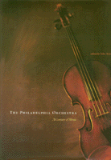

Dedicated to the millions of people who have experienced the joy of The Philadelphia Orchestra
Dedicated to the millions of people who have experienced the joy of The Philadelphia Orchestra


 Dedicated to the millions of people who have experienced the joy of The Philadelphia Orchestra
Dedicated to the millions of people who have experienced the joy of The Philadelphia Orchestra

|  |
The Philadelphia OrchestraA Century of MusicPhiladelphia Orchestra Assoc., edited by John Ardoincloth EAN: 978-1-56639-712-4 (ISBN: 1-56639-712-X) |
Philadelphia Book Clinic Certificate of Award, 2000
"The Philadelphia Orchestra continues to be a gleaming jewel in the musical crown of America."
—Isaac Stern
Like the city in which it was born 100 years ago, the Philadelphia Orchestra is known for its classy elegance—a sophisticated polish that is impressive without being brash or showy. But in addition to the lush string sound and piquant winds and brass for which the Orchestra has become famous, the "Fabulous Philadelphians" were also pioneers in American musical life in this century.
Lavishly illustrated with more than 200 photos and engagingly written by twelve prominent writers, The Philadelphia Orchestra: A Century of Music offers the first full history of this great orchestra's tradition and legacy.
Premieres of essential masterworks by Sibelius, Mahler, Stravinsky, Rachmaninoff, Schoenberg.
The first orchestra to make electrical recordings, in 1925, and the first to appear on a full-length national radio broadcast.
The first American orchestra to visit China
The orchestra of Disney's Fantasia.
With wit and scholarship, twelve writers celebrate the 100th anniversary of this world-renowned orchestra by detailing the rich musical history of Philadelphia, as well as the traditions of the Orchestra's music directors, Fritz Scheel, Carl Pohlig, Leopold Stokowski, Eugene Ormandy, Riccardo Muti, and Wolfgang Sawallisch. They take us to rehearsals and concerts, recording studios and tours, boardrooms and inner-city schools.
The Philadelphia Orchestra: A Century of Music also introducts us to the musicians and the Orchestra supporters who have built the ensemble's international stature. It examines the Orchestra's innovative educational programs, fundraisers, and membership drives.
This elegant keepsake book also features appendices listing the Orchestra's musicians through its entire history, world and U.S. premieres, and a complete discography and filmography. It is an essential collector's item for music-lovers everywhere, and an electrifying "read" for anyone interested in music in America during the 20th century.
"The Philadelphia Orchestra's list of conductors and soloists for the last century reads like a book on the history of music...there has not been a great name in music over the last hundred years who has not appeared with the Philadelphia Orchestra."
—James Galway
Prelude – Wolfgang Sawallisch
Preface – John Ardoin
The Beginnings – Ronald L. Davis
The Stokowski Era – Joseph Horowitz
The Living Legacy – Richard Freed
The Ormandy Era – Herbert Kupferberg
On the Road – Peter G. Davis
Building Audiences – Diana Burgwyn
The Muti-Era — Matthew Gurewitsch
Supporting the Orchestra – Louis Hood
The Musicians – Daniel Webster
Guests in the House – Tim Page
The Sawallisch Era – Barrymore Laurence Scherer
The Second Century – Christopher Gibbs
Appendixes: Orchestra Members, World and U.S. Premieres, Discography and Filmography
John Ardoin is former music critic for the Dallas Morning News and author of The Callas Legacy, Callas at Julliard: The Master Classes, The Stages of Menotti, The Furtwängler Record, and Kirov: Life in a Great Theater.
General Interest
Music and Dance
Philadelphia Region
© 2015 Temple University. All Rights Reserved. This page: http://www.temple.edu/tempress/titles/1492_reg.html.